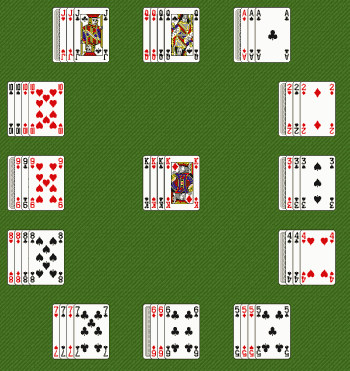

| Type of Deck | Standard Deck |
| Tableau | Deal cards in a clock shape, for a total of twelve piles with four cards each. |
| Stock | Place last four cards in the Stock pile (middle of the Tableau) Flip over top card. |
To reveal all the cards.
Move the top card in the middle to the appropriate pile. The Tableau is in the shape of a clock, and so the numbered cards go where they would on an analog clock. Aces go where the ones go, and the Jacks and Queens go where the elevens and twelves go respectively. For all the people who have never had an analog watch/clock, this is the pattern:
Clock Layout.
Kings are kept in the middle pile. When a card is moved to a new pile (or made to stay in the same pile, as the case is with the King), the bottom card in the new pile is taken and placed on top of the middle pile face up. This new card is ready for play. To move a card to the appropriate pile, either drag the card over or double click on the appropriate receptor pile.
Game is over when there are four kings in the middle. At this point, you've won if goal is achieved. Note that if a card in a pile is in the right place it is okay even if it is faced down.
Each card in the appropriate pile of the clock (not counting Kings, as there are no Kings on real clocks) scores one point.
Maximum possible score: 48
Find a way to automate this game. There are no decisions ever to be made. If you lose it's not your fault. (Contrariwise, if you win, it's just luck!)